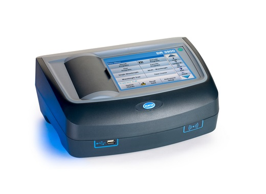
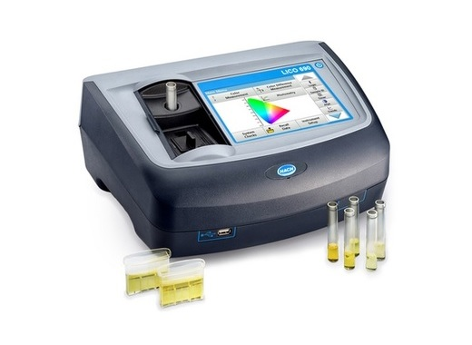
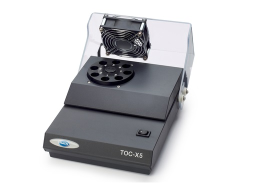

DR6000 სპექტროფოტომეტრი
მოიცავს წინასწარ დაპროგრამებულ 250 ფოტომეტრიულ ანალიზს. აქვს როგორც ხილული, ასევე ულტრაიისფერი სინათლე. ტალღის სიგრძე 190 – 1100 ნანომეტრი. ტალღის სიგრძის სიზუსტე ± 1 ნანომეტრიმეტის ნახვა ვიდეო

მეტის ნახვა ვიდეო
DR3900 სპექტროფოტომეტრი
მოიცავს წინასწარ დაპროგრამებულ 250 ფოტომეტრიულ ანალიზს. ფოტომეტრია კეთდება ხილული სინათლის ტექნოლოგიით. ტალღის სიგრძე 320 – 1100 ნანომეტრი ტალღის სიგრძის სიზუსტე ± 1.5 ნანომეტრიმეტის ნახვა ვიდეო

მეტის ნახვა
Lico - სპექტრული კოლორიმეტრი
25 სხვადასხვა ფერის შკალის გამოყენებით, გამოიყენება სითხეების ფერის განსასაზღვრად. ტალღის სიგრძის დიაპაზონი 380 - 720 ნანომეტრი, სიზუსტე ±1.5 ნანომეტრი. კიუვეტებთან თავსებადობა - 10, 11, 50 მმმეტის ნახვა

TU5200 ლაზერული სიმღვრივის მზომი
სიმღვრივის აღქმის ინოვაციური ტექნოლოგია, 360° x 90°; შეესაბამება როგორც ISO, ასევე EPA სტანდარტს. გაზომვის ერთეულები: NTU / FNU / TE/F / FTU / EBC / mg/L. ნიმუშის ტემპერატურა 4 - 70°C. ექვს ეტაპიანი დაკალიბრება.მეტის ნახვა

TL2310 სიმღვრივის მზომი
გაზომვის დიაპაზონი 0 – 1000 NTU. შედეგების სიზუსტე ±2%. გაზომვის ერთეული NTU/FNU. სინათლის წყარო LED, 860 ± 30 ნანომეტრით. გაზომვის მეთოდი - ნეფელომეტრიული. ISO სტანდარტთან შესაბამისი.მეტის ნახვა ვიდეო

BOD Track II - ჟანგბადის ბიოლოგიური მოხმარების მზომი
ჟბმ-ს გაზომვა შესაძლებელია 5, 7, 10 დღის განმავლობაში, ასევე OECD ბიოდეგრადაციის ტესტი 30 დღის განმავლობაში, წინასწარ დაპროგრამებული რეჟიმებით. გაზომვის დიაპაზონი 0 – 700 მგ/ლ.მეტის ნახვა ვიდეო

BOD Direct Plus - ბიოლოგიური ჟანგბადის მოთხოვნილების ანალიზატორი
გაზომვის მეთოდი არის რესპირომეტრიული, წნევის სენსორის გამოყენებით. გაზომვის დიაპაზონი 0 – 4000 მგ/ლ O2.მეტის ნახვა

მეტის ნახვა ვიდეო
TOC-X5 - საერთო ორგანული ჟანგბადი
გამოიყენება ნიმუშიდან არაორგანული ნახშირბადის მოსაცილებლად. ჯამში 8 კიუვეტის დამუშავების შესაძლებლობა. ელექტრო ენერგიის მოთხოვნა 100 - 240 ვოლტი. სტანდარტული 2 წლიანი გარანტიამეტის ნახვა ვიდეო

QBD1200 - საერთო ორგანული ნახშირბადის გასაზომად
მარტივი, სწრაფი, სანდო შედეგები. ეს მოწყობილობა არის რევოლუციური, გამომდინარე იქიდან რომ მიღებული შედეგების სიზუსტემ მიაღწია 2-3% ცდომილებას.მეტის ნახვა ვიდეო

AT1000 ავტომატური ტიტრატორი
მოიცავს ორ მოდელს: პოტენციომეტრული (Potentiometric = ძაბვის გაზომვის მეთოდი) და Karl Fischer-ის მოცულობითი (volumetric) ტიტრაცია. ანალიზი ხდება წინასწარ დაპროგრამებული მეთოდებით, რაც ტიტრაციას, ზოგადად არაზუსტ მეთოდს, მაქსიმალურად აახლოვებს სიზუსტესთან, რაც კეთდება ავტომატურად.მეტის ნახვა ვიდეო

პორტატული ინკუბატორი
სამუშაო ტემპერატურა 0 – 40 °C. სიზუსტე ±0.5 °C 37 გრადუსზე. დენის წყარო 12 ვოლტი DC, ასევე 12 ვოლტიანი აკუმულატორი / ელემენტი. გამოიყენება როგორც ლაბორატორიაში, ასევე პორტატული დანიშნულებით.მეტის ნახვა

Orbisphere 6110 - სასმელების ანალიზატორი
მზა პროდუქტში CO2-ის ანალიზატორი. ანალიზს აკეთებს პროდუქტის ნებისმიერი ტემპერატურისას. ანალიზისას, მოწყობილობის არცერთი კომპონენტი არ არის უშუალო კონტაქტში პროდუქტთან, რაც იძლევა მაქსიმალურ სიზუსტეს.მეტის ნახვა ვიდეო

AP3900 Laboratory Robot - ლაბორატორიული რობოტი
რობოტი, რომელიც დამოუკიდებლად აკეთებს ჟქმ-ს, საერთო ფოსფორის და აზოტის, ამიაკის, ნიტრატების და ნიტრიტების ანალიზს პარალელურ რეჟიმში. საჭიროა მხოლოდ წყლის ნიმუშების მიწოდება, ხოლო დანარჩენ საქმეს დანადგარი ავტომატურად შეასრულებსმეტის ნახვა ვიდეო

LT20 BOD5 - თერმოსტატი
ტემპერატურის კონტროლი ერთდროულად 27 ნიმუშისთვის. სამუშაო ტემპერატურა 10 – 30°C გრადუსი. შენახვის ტემპერატურა -20 - 60°C გრადუსი. ელექტრო ენერგიის მოხმარება 230 ვოლტი. გამოიყენება ლაბორატორიულ პირობებშიმეტის ნახვა

LT 200 - თერმოსტატი
დაპროგრამებული 40, 100, 148 გრადუსებზე სამუშაოდ. 20 გრადუსიდან 148 გრადუსზე გაცხელება მხოლოდ 10 წუთში. ორი პარალელური თერმობლოკით, სადაც შესაძლებელია განსხვავებული ტემპერატურების ერთდროულად მიღება. ელექტრო ენერგიის მოთხოვნა 220 ვოლტიმეტის ნახვა
LT 200 - თერმოსტატი
დაპროგრამებული 40, 100, 148 გრადუსებზე სამუშაოდ. 20 გრადუსიდან 148 გრადუსზე გაცხელება მხოლოდ 10 წუთში. ორი პარალელური თერმობლოკით, სადაც შესაძლებელია განსხვავებული ტემპერატურების ერთდროულად მიღება. ელექტრო ენერგიის მოთხოვნა 220 ვოლტიმეტის ნახვა
LT 200 - თერმოსტატი
დაპროგრამებული 40, 100, 148 გრადუსებზე სამუშაოდ. 20 გრადუსიდან 148 გრადუსზე გაცხელება მხოლოდ 10 წუთში. ორი პარალელური თერმობლოკით, სადაც შესაძლებელია განსხვავებული ტემპერატურების ერთდროულად მიღება. ელექტრო ენერგიის მოთხოვნა 220 ვოლტიმეტის ნახვა